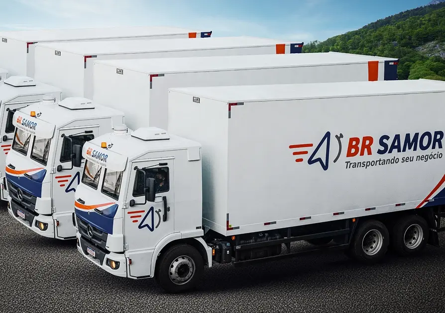

Medicamentos na temperatura certa, com a segurança de quem transporta carga de alto valor.
Transporte com temperatura controlada para a indústria farmacêutica, distribuidoras e hospitais, da coleta à entrega, em todo o Brasil.
- Caminhões refrigerados para cargas de 2 °C a 8 °C e de 15 °C a 25 °C
- Temperatura e localização monitoradas 24 horas por dia
- Transportadora autorizada pela Anvisa
- Gestão de risco, frota própria e apólice de seguro própria
O medicamento virou o alvo número 1 da estrada. E é também a carga mais sensível que existe.
-
22,3% dos prejuízos com roubo de cargas
foram com medicamentos no 1º trimestre de 2026. Um ano antes, eram 1,7%.
-
44,4% das cargas acima de R$ 1 milhão
roubadas no período eram de medicamentos. O crime busca valor e liquidez.
-
2–8 °C faixa dos termolábeis
Vacinas, insulinas e biológicos perdem eficácia fora dela. Cada viagem precisa de controle e registro.
Fonte dos dados de roubo: Relatório nstech de Roubo de Cargas, 1º trimestre de 2026 (gerenciadoras BRK, Buonny e Opentech).
O que transportamos
Uma solução para cada exigência do seu produto
A temperatura programada segue a especificação do fabricante, registrada no rótulo e no registro sanitário de cada medicamento.
Refrigerado
2 °C a 8 °C
Termolábeis
Vacinas, insulinas, biológicos, imunobiológicos e demais produtos da cadeia fria.
Ambiente controlado
15 °C a 25 °C
Medicamentos em geral
A maior parte dos medicamentos sólidos e líquidos, protegidos do calor e do frio extremos ao longo da rota.
Saúde
Correlatos
Materiais cirúrgicos e hospitalares
Materiais cirúrgicos, insumos e produtos para saúde, com manuseio por equipe treinada.
Alto valor
Especiais
Oncológicos e alto custo
Terapias de alto valor com protocolos de segurança reforçados, escolta e portador exclusivo quando necessário.
Caminhões preparados para manter a temperatura do início ao fim
Nossa nova frota tem baús refrigerados com equipamento de frio ativo. A temperatura programada para a sua carga se mantém estável por toda a rota, com ou sem paradas.
-
Baú refrigerado com controle ativo
Equipamento de frio dedicado, programado para a faixa exigida pelo seu produto.
-
Veículos qualificados termicamente
Mapeamento térmico do baú e testes de desempenho, conforme as boas práticas de transporte de medicamentos.
-
Sensores calibrados e alarmes
Qualquer desvio de temperatura gera alerta imediato para a central e aciona o plano de contingência.
-
Segurança de carga de alto valor
Rastreamento por satélite, gerenciamento de risco e os protocolos que a BR Samor aplica há 17 anos em cargas visadas.

Temperatura e localização da sua carga, em tempo real
Você acompanha cada viagem pelos dashboards da BR Samor e recebe a comprovação de que a faixa de temperatura foi respeitada do começo ao fim.
-
Dashboard com temperatura por viagem
Status da entrega, posição do veículo e leitura dos sensores na mesma tela.
-
Relatório de temperatura na entrega
O registro completo da viagem acompanha o comprovante de entrega, pronto para a sua auditoria.
-
Rastreamento 24 horas
Veículos monitorados por satélite e consulta da nota fiscal pelo portal de rastreamento.
Modalidades
Do abastecimento regular à entrega urgente
Os serviços da BR Samor, aplicados à rotina da indústria farmacêutica e da saúde.
Rodo Express refrigerado
Veículo dedicado com prazo de carga aérea. Ideal para transferências entre fábrica, centro de distribuição e distribuidoras.
Rodo Blindado
Para cargas de altíssimo valor: blindagem, gerenciamento de risco, monitoramento em tempo real e cobertura integral.
Priority
Coleta com veículo exclusivo e embarque no primeiro voo disponível. Para rupturas de estoque e demandas hospitalares urgentes.
Portador Exclusivo
Um colaborador acompanha a carga do início ao fim, sem restrição de horário. Indicado para oncológicos e terapias críticas.
Rodoviário e aéreo integrados, em todo o Brasil
Matriz no Espírito Santo, bases nas principais regiões do país e parceria com as companhias aéreas para combinar o caminhão refrigerado com o prazo do avião.
-
Matriz e bases
- Serra/ES (matriz)
- Guarulhos/SP
- Contagem/MG
- Curitiba/PR
- Londrina/PR
- Porto Belo/SC
- Porto Alegre/RS
- Brasília/DF
- Jaboatão/PE
- Manaus/AM
-
Integração aérea
Embarques com GOL, LATAM Cargo e Azul para urgências e longas distâncias.
Da cotação à entrega comprovada
Um processo pensado para o rigor da indústria farmacêutica.
-
Cotação
Você informa o produto, a faixa de temperatura, as rotas e o volume.
-
Qualificação
Enviamos a documentação para o seu processo de qualificação de fornecedor.
-
Transporte monitorado
Coleta e viagem com temperatura e localização acompanhadas 24 horas.
-
Entrega comprovada
Comprovante de entrega acompanhado do relatório de temperatura da viagem.
Dúvidas
frequentes
Quais faixas de temperatura vocês atendem?
A frota refrigerada atende cargas refrigeradas de 2 °C a 8 °C, como vacinas, insulinas e biológicos, e cargas em ambiente controlado de 15 °C a 25 °C. A temperatura é programada conforme a especificação do fabricante de cada produto.
Os veículos são qualificados termicamente?
Sim. Os baús passam por mapeamento térmico e testes de desempenho, e os laudos ficam disponíveis para a auditoria e a qualificação de fornecedores da sua empresa.
Recebo o registro de temperatura da viagem?
Sim. Você acompanha a temperatura em tempo real pelo dashboard e recebe o relatório completo da viagem junto com o comprovante de entrega.
O que acontece se a temperatura sair da faixa?
Os sensores disparam um alarme para a central de monitoramento, que aciona o plano de contingência e avisa você imediatamente. Toda ocorrência é investigada e documentada.
A BR Samor é autorizada pela Anvisa?
Sim. A BR Samor tem Autorização de Funcionamento de Empresa (AFE) da Anvisa para o transporte de medicamentos e produtos para saúde. A documentação é enviada no processo de qualificação.
Como funciona o seguro da carga?
A BR Samor trabalha com apólice própria e gerenciamento de risco em todas as operações. As condições de cobertura são apresentadas na proposta comercial, de acordo com o valor e o perfil da carga.
Quais regiões vocês atendem?
Todo o território nacional, combinando a rede de bases da BR Samor com o transporte aéreo. Informe origem e destinos na cotação para recebermos a melhor solução para a sua rota.
Conte sobre a sua operação e receba uma proposta sob medida
Nosso time analisa o seu produto, as rotas e o volume para indicar a melhor combinação de frota refrigerada, modalidade e protocolo de segurança.
- Atendimento por especialista em transporte de medicamentos
- Documentação pronta para a qualificação de fornecedores
- Proposta com faixa de temperatura, modalidade e seguro
Solicitar cotação
Todos os campos são obrigatórios, exceto a mensagem.